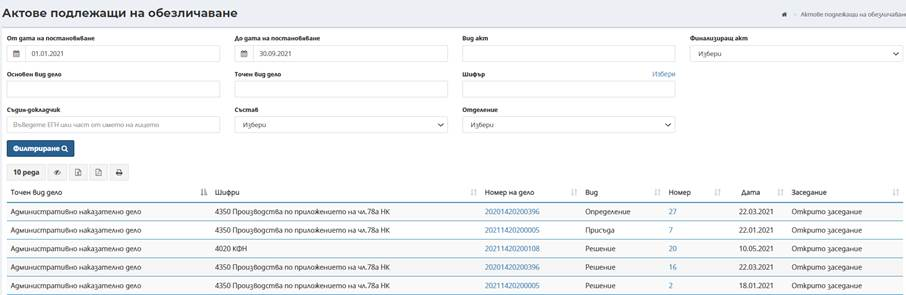

Под-меню Актове подлежащи на обезличаване дава възможност за извършване на търсене и преглед на всички подписани не обезличени актове .
При първоначално зареждане на екран Актове подлежащи на обезличаване не се визуализират резултати. При директно натискане на бутон Филтриране, се извеждат данни за всички зали въведени в системата и заетостта им. Наборът от данни може да бъде филтриран, в зависимост от въведените критерии в полетата От дата на постановяване - До дата на постановяване в горната част на екрана.

Визуализират се данни за точен вид дело, шифри, номер на дело, вид на акта и номер, дата на постановяване и заседание. Допълнително може да се извършва сортиране на резултатите по възходящ или низходящ ред за съответната колона в таблицата.
За всеки запис в таблицата е възможно извършване на допълнителни действия, посредством избор номер на дело, представляващи хипервръзка, която препраща към екрани за преглед на дело, по което е насрочено заседание за съответната дата и зала.